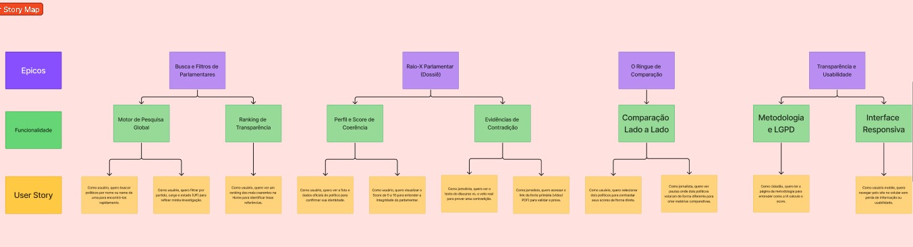

Story Map e Personas
Para garantir que o ContraDito resolva um problema real e entregue valor desde o primeiro dia, baseamos o nosso desenvolvimento em metodologias de design centradas no usuário.
A nossa Persona: O Jornalista Investigativo
O sistema foi desenhado especificamente para as necessidades de um Jornalista Investigativo ou analista político.
- O Problema: Perda de tempo ao analisar horas de vídeos de sessões plenárias e ao cruzar dados de centenas de páginas do Diário Oficial.
- A Necessidade: Uma ferramenta rápida, com interface limpa, que faça o cruzamento automático do que foi dito vs. o que foi votado.
Nota visual: A Persona do ContraDito original construída pela equipe no Figma está detalhado abaixo.
User Story Map
Mapeamos a jornada do nosso usuário no Figma para definir claramente o que entra no nosso MVP (Produto Mínimo Viável) e o que ficará para atualizações futuras.
1. Descobrir e Buscar Políticos
- MVP (Prioridade Alta): Pesquisar por nome do parlamentar e utilizar filtros cruzados (Partido e Estado/UF).
- Melhorias Futuras: Ranking na página inicial destacando os políticos Mais/Menos Coerentes.
2. Analisar Dossiê e Contradições
- MVP (Prioridade Alta): Visualizar o Score de Coerência e as evidências em texto extraídas pela Inteligência Artificial.
- Melhorias Futuras: Opção para exportar o dossiê completo em formato PDF.
3. Comparar Políticos (Lado a Lado)
- MVP (Prioridade Alta): Tela "Ringue" para comparar dois políticos, contrastando seus scores e contradições lado a lado.
- Melhorias Futuras: Filtros de comparação avançados por temas específicos (ex: economia, meio ambiente).
Nota visual: O Srorymap do ContraDito original construído pela equipe no Figma está detalhado abaixo.
